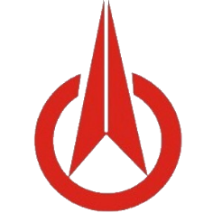
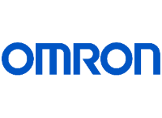
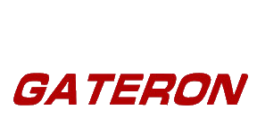
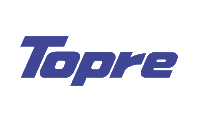

Bilde: Cherry Corporation ©
Denne produsenten har tatt av de siste årene som den orginale produsenten av mekaniske taster. De anses som pionerene innenfor markedet og produserer de mest kjente tastene i dagens marked. Det finnes mange kloner av Cherry taster, og noen mener de er bedre, men Cherry er fortsatt den orginale, og mest brukte produsenten i dag.

Bilde: Kailh ©
Kailh, også kjent som Kaihua, ble først kjent gjennom Razer, da Razer lanserte sit første mekaniske tastatur. De har siden laget flere spesial-laget tasater, både til Steelseries med deres QS1 tast og Tesoro med deres Agile low-profile tast.

Bilde: Omron ©
Omron er en ledende produsent av brytere, og du finner bryterene til Omron i nesten alt, og spesielt i utstyr brukt i produksjon som nødbrytere og startbrytere. Logitech kontaktet Omron for å lage en helt ny type tast som Logitech fikk bruke alene som skulle være rettet mot spillere, og de endte opp med tasten "Romer-G".

Bilde: Gateron ©
Gateron lager i hovedsak kloner av Cherry sine MX-taster.

Bilde: Topre ©
Topre lager den mest unike mekaniske bryteren av de på denne nettsiden. De bruker en metode kalt "capacitive switch" som bruker en kapasitiv føler for å finne ut når du klikker ned tasten.